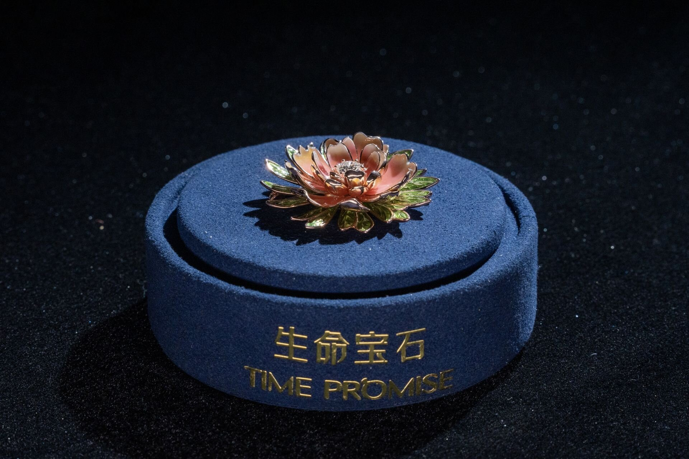
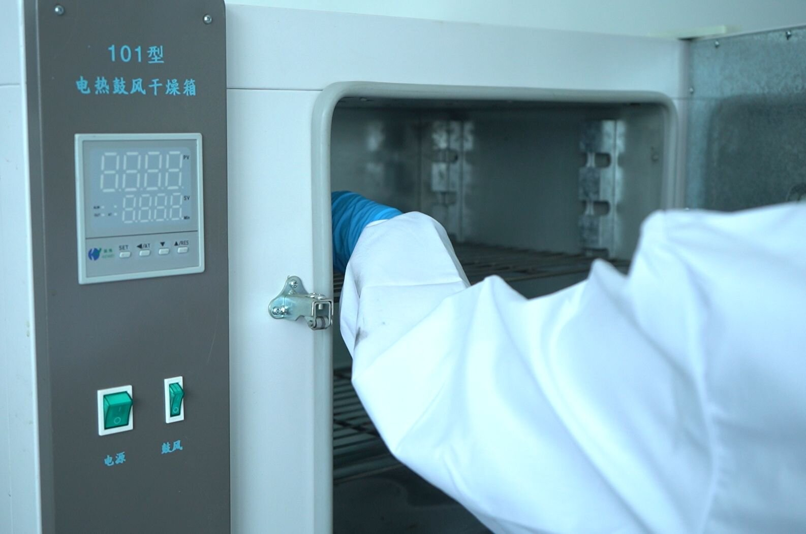
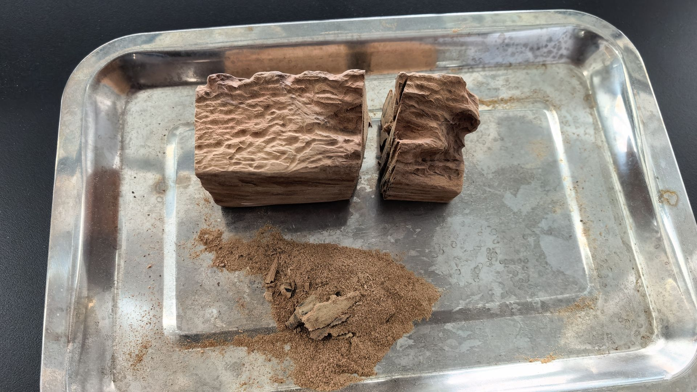
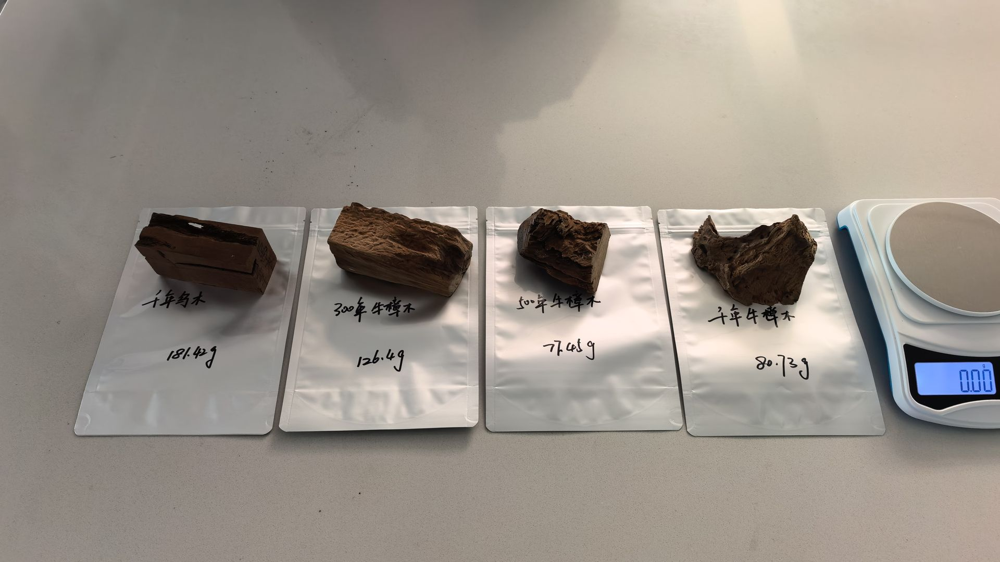
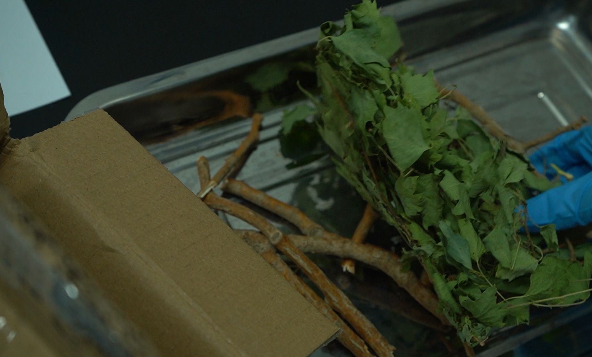

Quick answer
Plant-source memorial diamonds use the same HPHT synthesis protocol as hair-source diamonds. The key difference is carbon source chemistry: plant fibers contain 40–50% carbon (vs. 30–40% in animal hair), but cellulose and lignin in plant cell walls require extended pretreatment cycles. BioGem Lab has processed four botanical categories — peony petals, ancient banyan leaves, camphorwood heartwood, and poplar branches. Recommended plant sample submission is 15–30g for a 1.0ct equivalent, higher than the 10–20g standard for hair. Graphitization time extends by 12–24 hours for lignin-derived carbon.
The central scientific question in memorial diamond manufacturing is not the origin of the biological material. It is the form in which carbon exists within that material, and what it takes to convert that carbon into a graphitic precursor suitable for HPHT crystal growth.
This article examines plant-source carbon from a materials engineering perspective. The data comes from four real production batches at BioGem Lab's Luoyang facility, each representing a different class of botanical material: flower petals, deciduous leaves, hardwood heartwood, and desert shrub composite. All data has been anonymized for client privacy but is otherwise unaltered.
Plant Carbon vs. Animal Carbon: Structural Chemistry
Animal-derived carbon sources — hair, fur, nails, feathers — share a common primary organic component: keratin, a sulfur-rich fibrous protein. Keratin's carbon backbone is relatively simple, with molecular chains cross-linked by disulfide bonds. During thermal decomposition:
- Pyrolysis onset temperature: ~230°C
- Primary volatiles: sulfides, ammonia, water vapor
- Residual carbon: amorphous, requiring higher graphitization temperatures
- Typical carbon content (dry mass): 30–40%
Plant cell walls, by contrast, are a composite of three polymers: cellulose, hemicellulose, and lignin. This architecture is significantly more complex than keratin:
| Component | Mass Fraction | Carbon Content | Thermal Decomposition |
|---|---|---|---|
| Cellulose | 40–50% | 44% | 270–350°C; produces levoglucosan |
| Hemicellulose | 15–25% | 42% | 200–280°C; highly volatile |
| Lignin | 15–30% | 60–65% | 280–500°C; high char yield |
Lignin's carbon density is the botanical advantage — it is among the highest of any biological polymer. But its complex aromatic structure also demands higher graphitization activation energy. XRD analysis of our graphite precursors shows:
- Animal-source graphite: Graphitization degree 85–90%
- Plant-source graphite: Graphitization degree 80–88% (lignin-derived carbon resists ordering)
The 2–10 point gap translates to an additional 12–24 hours of graphitization time. HPHT synthesis kinetics themselves are unaffected — once graphitized, the carbon behaves identically in the growth cell.
Case 1: Peony Diamond — Floral Carbon Source
Material: Luoyang double-petaled peony petals
Submitted mass: ~80g fresh petals (moisture content ~75%) → ~20g dry mass
Output: 1 round brilliant-cut diamond, 3.0 ct
Cycle: 78 days (+18 days vs. standard 60-day hair-source cycle)
Process notes:
- High petal moisture required low-temperature drying (60°C, 12 hours) before pyrolysis
- Thin cell walls, high cellulose, low lignin — the opposite of optimal botanical carbon
- Carbon extraction rate: ~18% of dry mass (below wood, above most herbaceous plants)
- Color output: F (slightly warmer than hair-source; suspected link to residual plant polyphenols)
Technical note on oxidation control: Peony petals' high moisture and thin cell walls make them prone to oxidation during drying. We added a nitrogen purge during the dehydration stage to prevent Maillard reaction browning, which would otherwise contaminate the carbon source with non-biogenic melanoidin compounds.


Case 2: Banyan Diamond — Deciduous Tree Leaves
Material: Fallen leaves from a ~500-year-old banyan tree, Rongjiang, Guizhou
Submitted mass: 1,200g fresh leaves (moisture content ~60%) → ~480g dry mass
Output: 3 diamonds — 0.5 ct, 0.8 ct, 1.2 ct
Cycle: 89 days (includes sequential batch processing time)
Process notes:
- Autumn leaves show elevated lignin deposition versus fresh foliage — higher carbon density
- Large batch split into 4 pyrolysis runs to avoid reactor overload
- Carbon extraction rate: ~35% of dry mass — the highest among plant sources in this study
- Color output: E–F (comparable to hair-source diamonds)
Botanical taxonomy note: Banyan (Ficus microcarpa, Moraceae) lignin is predominantly guaiacyl-type (G-lignin). G-lignin pyrolysis produces high char yield but requires careful temperature profiling to avoid tar formation that can block reactor gas lines.


Case 3: Camphorwood Diamond — Hardwood Heartwood
Material: Taiwan camphorwood (Cinnamomum camphora) heartwood fragments
Submitted mass: ~45g heartwood (moisture content ~15%, air-dried naturally)
Output: 1 cushion-cut diamond, 1.5 ct
Cycle: 65 days (near-standard, +5 days only)
Process notes:
- Lowest moisture content among all four cases — minimal drying overhead
- Camphor (C10H16O) and terpenoid volatiles required a dedicated 150°C pre-burn stage
- Carbon extraction rate: ~42% of dry mass — highest efficiency of any source, plant or animal
- Color output: D–E (exceptional; correlated with high-density lignin in heartwood)
Structural chemistry note: Lauraceae heartwood lignin is predominantly syringyl-type (S-lignin), which pyrolyzes to a more ordered carbon structure than G-lignin. However, terpenoid pyrolysis generates free radicals that can interfere with graphitization if the pre-burn stage is insufficient. Temperature ramp rate during pre-burn was controlled at 2°C/min to prevent flash volatilization.


Case 4: Poplar Diamond — Desert Shrub Composite
Material: Xinjiang poplar (Populus euphratica) branches + Alhagi sparsifolia (camel thorn) roots, mixed
Submitted mass: 200g mixed sample (moisture content ~50%)
Output: 1 round brilliant-cut diamond, 0.5 ct
Cycle: 72 days
Process notes:
- Desert plants accumulate higher silica phytolith content; acid wash stage was intensified (HF 5%)
- Poplar (Salicaceae) lignin is G/S mixed-type; Alhagi (Fabaceae) root nodules carried residual nitrogen-fixing bacteria requiring additional sterilization
- Carbon extraction rate: ~28% of dry mass
- Color output: E–F
Isotope traceability note: The mixed sample produced a bimodal δ¹³C signature — C3 plant (poplar, δ¹³C ≈ −27‰) and C4 plant (camel thorn, δ¹³C ≈ −13‰). Carbon isotope analysis at the QC stage confirmed both sources were present in the final diamond lattice, validating our chain-of-custody protocol for composite submissions.


Universal Technical Challenges in Botanical Processing
Challenge 1: Moisture Content Variability
Botanical samples span an extreme moisture range: flower petals at 70–80%, heartwood at 10–20%. This directly affects carbon extraction efficiency per gram of submitted material. Our standardized intake protocol:
- 1Initial analysis: Gravimetric moisture determination (105°C, 2 hours)
- 2Pre-drying: Samples >50% moisture undergo low-temperature drying (60°C, N₂ atmosphere)
- 3Carbonization: Muffle furnace at 280–350°C, 4–6 hours
- 4Purification: Acid wash to remove ash; target purity ≥99.95%
Challenge 2: Inorganic Impurities
Plant samples carry significantly more inorganic contamination than animal hair:
| Contaminant | Origin | Removal Method |
|---|---|---|
| Silica (SiO₂) | Phytoliths, windborne dust | Hydrofluoric acid wash (5% HF) |
| Calcium salts (CaCO₃) | Cell wall calcification | Hydrochloric acid wash (10% HCl) |
| Soil particles | Root/leaf surface adhesion | Deionized water ultrasonic rinse |
| Insect debris | Natural decomposition | Air classification + sieving |
Challenge 3: Seasonal Variation
Carbon content and lignin fraction vary seasonally within the same species:
- Spring foliage: High cellulose, low lignin, low overall carbon — suboptimal
- Autumn leaves: Lignin deposition increases carbon density, but sand contamination rises
- Heartwood: Stable year-round; the preferred botanical carbon source when available
We advise partners to collect autumn leaves or heartwood samples where possible, and to avoid spring tender growth.
Sample Size Guide: Plant vs. Animal Sources
| Target Size | Animal Hair (Recommended) | Plant Source (Recommended) | Reason for Difference |
|---|---|---|---|
| 0.5 ct | 10–15g | 15–25g | Plant carbon extraction 10–20% lower |
| 1.0 ct | 10–20g | 20–30g | Moisture discount on dry mass |
| 1.5 ct | 20–30g | 30–50g | Larger stones demand higher purity |
| 2.0 ct | 30–40g | 50–80g | Heartwood optimal; petals worst |
Practical guidance for partners:
- Prioritize woody tissue (trunk, branch) over leaves or petals
- Store dry, sealed, and away from light (same protocol as hair)
- For mixed submissions (hair + plant), calculate total carbon by proportion — but declare the ratio in advance
Conclusion
Plant-source memorial diamonds are not a downgrade from hair-source production. In certain conditions — specifically hardwood heartwood with high S-lignin content — they can match or exceed the color performance of keratin-derived diamonds. The camphorwood case (D–E color, 42% extraction rate, 65-day cycle) demonstrates that botanical carbon, properly selected and processed, is a first-class feedstock.
The trade-off is predictability. Hair offers consistent 30–40% carbon content and well-understood pyrolysis behavior. Botanical sources span a wider parameter space: 7–42% effective carbon yield depending on tissue type, season, and preparation. For B2B partners, this means sample sizing guidance must be source-specific, not universal.
From peony petals to millennial banyan, from fragrant camphorwood to desert poplar — each botanical source is a materials science experiment. Every batch adds parameters to our carbon engineering database. For partners, understanding these technical distinctions enables more accurate client communication: this is not a generic lab-grown diamond. It is a crystal reconstructed from the carbon atoms of a specific plant, carrying a molecular signature that no other feedstock can replicate.
Evaluating botanical carbon for your memorial diamond program?
BioGem Lab processes all biological carbon sources — hair, fur, feathers, and botanical material — through the same patented extraction and HPHT synthesis pipeline. We disclose our standards before you ask.
Explore Partnership →Frequently Asked Questions
Do plant-source memorial diamonds differ physically from hair-source diamonds?
No. After purification and graphitization, carbon from animal keratin and plant cellulose both convert to high-purity graphite precursor. HPHT-synthesized diamonds are physically identical in hardness (10 Mohs), refractive index (2.42), and thermal conductivity. Third-party certificates from CCIC or IGI cannot distinguish carbon source type.
Can dried or preserved flowers be used for memorial diamonds?
Yes, but preserved flowers processed with glycerin or alcohol substitution may alter carbon structure. We recommend unprocessed, naturally dried botanical material. Submit 15–30g for a 1.0ct equivalent diamond.
Can fruits or vegetables be converted to memorial diamonds?
Technically possible but not recommended. Fruit flesh exceeds 90% moisture with extremely low carbon density, requiring over 500g for a 0.5ct diamond. Fruit peels and pits with lignified structures (coconut shell, peach pit) perform significantly better and are viable alternatives.
Do mixed samples (pet hair + plant material) affect diamond quality?
No. Mixed samples are processed separately and homogenized before graphitization. Total carbon must meet the threshold for the target carat weight. Carbon isotope composition (δ¹³C) will show intermediate values but does not affect HPHT synthesis. Advise the mixing ratio in advance (e.g., 70% hair + 30% plant).
Do plant-source diamonds show different color grades?
Possible minor variation. Plant polyphenols and lignin derivatives can introduce trace nitrogen impurities under high temperature, shifting output toward F–G versus E–F typical of hair sources. Rigorous purification keeps the difference within one color grade — visually indistinguishable to the unaided eye.
Patent: BioGem Lab's carbon extraction process is protected under Chinese invention patent ZL 201010565778.9, granted 2012. The method covers the complete pipeline from biological carbon source purification to HPHT-ready graphite feedstock.
Li Lihua — Chief Scientist, BioGem Lab
Inventor on Chinese invention patent ZL 201010565778.9 for the carbon-extraction process behind BioGem Lab's memorial diamonds.
Related Articles
Biological Carbon Extraction: From Hair to Graphite
The industrial pipeline converting biological samples into purified graphite for HPHT memorial diamond synthesis.
Carbon Purity Requirements for Memorial Diamond Synthesis
Technical specifications for carbon feedstock purity in HPHT memorial diamond manufacturing.
What Is HPHT Diamond Growth? A Technical Overview
Pressure fields, temperature gradients, metal catalyst transport, and crystal nucleation mechanics in industrial memorial diamond manufacturing.